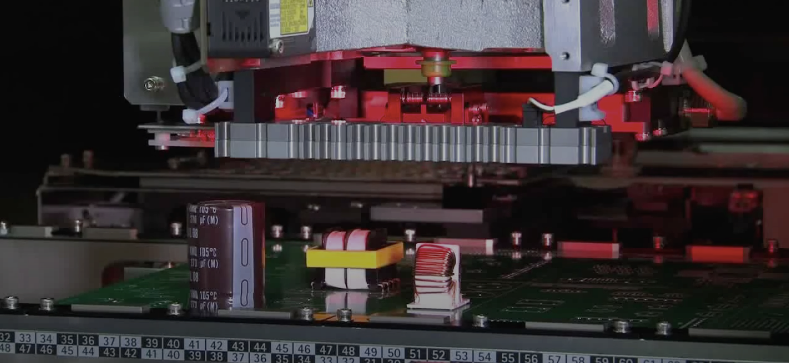
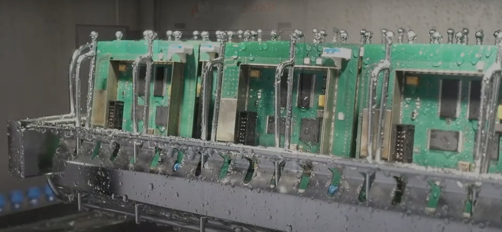

SMT
Machines and material for SMT

THT
Machines and material for THT

Cleaning
Machines and material for PCBA cleaning
Machines and material for SMT
Machines and material for THT
Machines and material for PCBA cleaning

PRINTING

MOUNTING

SOLDERING

CLEANING

COATING

AOI

SEPARATION

MARKING
Solder paste printing
Automatic printers are designed for medium-scale multi-product production of SMT assembly of printed circuit boards of varying complexity. The printer combines a compact design and high quality PCB solder paste processes. Complete readiness as standard. These are Hi-End class machines from manufacturers at low-cost equipment prices. You own innovative technologies with a small investment.
G Titan is a modern screen printing technology used in equipment of the Hi-End class: monitoring the height of the paste roll, the ability to work with long and heavy boards. Solder paste application and stencil inspection.
High quality standards for solder paste application. Precise board and stencil alignment High repeatability at high speeds Advanced systems for solder paste imprint inspection and process parameter monitoring.
Find out more...
SMD mounting.
Innovative automatic SMD installers of electronic components are designed for medium-scale multi-product SMT production of printed circuit boards of various complexity. The RS series SMD installers combine compact design and high quality electronic component installation processes. Hi-End machines that can be both a high-speed chiphooter installer and precision equipment for the installation of complex and small components.
JUKI's RS-1 features a groundbreaking head design that is currently unique in the industry! It includes a fully automated, height-adjustable centering system. The machine can work as both Chipshooter and Fine placer.
JUKI's RS-1 features a groundbreaking head design that is currently unique in the industry! It includes a fully automatic height-adjustable centering system that allows for individual adjustment of the head system.
Find out more...
Reflow.
RS series industrial solder paste reflow ovens are used in batch and large-scale production. The furnaces are specially designed to provide: maximum heat transfer, a wide range of the brazing process and constant monitoring of technological parameters. Thus, the combination of advanced brazing technologies, ease of operation and maintenance, gives the furnaces a leading position in the furnace market for products with high operational requirements.
Optimal thermal properties, such as a low ΔT across the entire width of the PCB, ensure reliable, high-quality soldering results over the life of the equipment.
The patented heating zone design for maximum heat transfer in combination with the process control system ensures high temperature stability in the furnace. Hardware warranty 3 years, including heaters and blower motors.
Find out more...